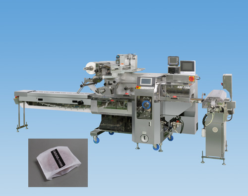

KBF-700e型 耳折装置付横ピロー包装機

特徴
■
ピロー包装を「角折り包装風に」に
・エンドシール部をサイドに折り込み「角折り包装風」にします。
・ホットメルトなどの接着剤は一切使用しません。
・密封包装可能なため保存期間が保てます。
・「角折り包装風」のため、化粧箱に納まりやすくなっています。
■
他の包装機と連動可能
・装置を単体制御・独立スタンドにすることで、KBF-7000Eとのドッキングも可能です。
■
コンパクト設計で省スペース
・コンパクトな装置に蓄積された技術・ノウハウが随所に生かされています。
・連包排出機能付きです。
包装対象品
■
使用例
まんじゅう、どら焼き、ブッセ、スポンジケーキ、カステラなど
HOMEへ戻る
Copyright (C) KAWASHIMA PACKAGING MACHINERY CO.,LTD. All Rights Reserved.